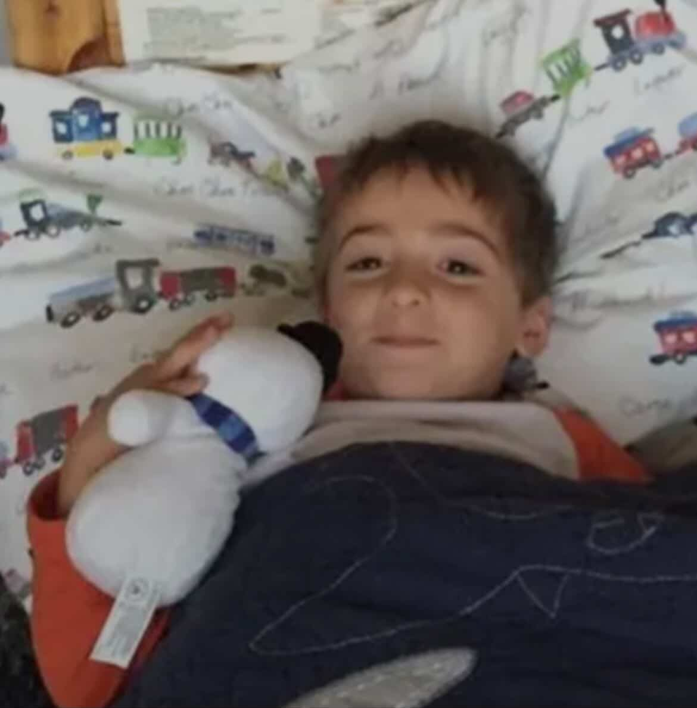
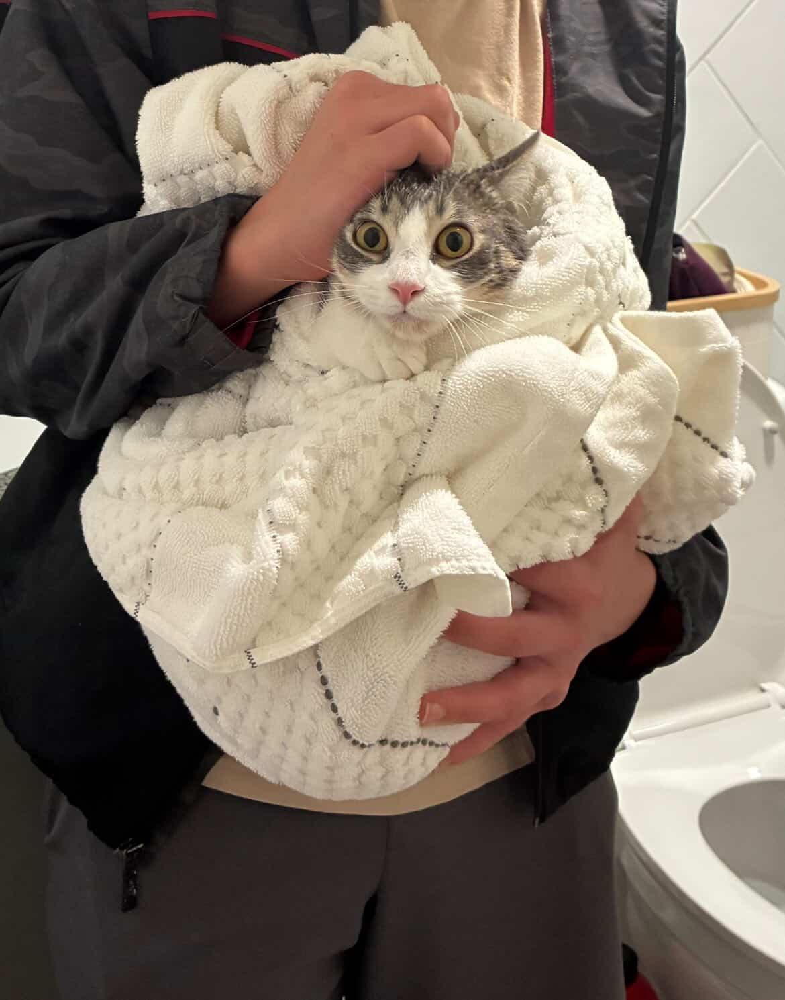
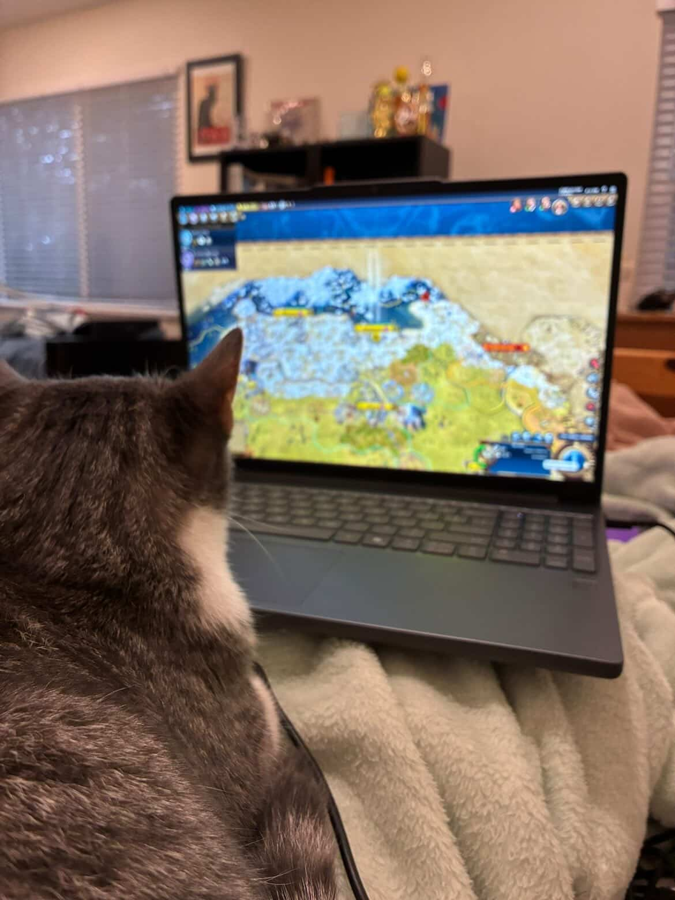

Early Life

When I was young I enjoyed solving puzzles and playing tennis. By nature I was pretty laid back. I liked building things such as robots and legos, and enjoyed watching cooking shows. I grew up alongside my older brother Max and my little sister Maya. In my spare time I mostly read books and watched movies, while also occasionally playing some video games.
Explore the World of Tennis →Current Interests

Currently I'm interested in game design and aerospace engineering, though I equally enjoy cooking and sleeping. Although I'm not very good at cooking, my favorite dish to cook is chicken quesadillas because they're easy to cook and they taste good. I've had a cat for about half a year, which I enjoy spending time with. In my spare time I like to play basketball with my friends. My favorite position to play is point guard, though I'm definitely still improving at the role.
Discover NASA & Aerospace →My Plans for the Future

I'd like to attend a college in the states and pursue a degree in physics or computer/data science. After finishing my education, I'd want to pursue game development and eventually launch or join an indie game development team. Ideally, I'd work full time on independent projects. However, seeing as the industry is largely subjective, I would also consider pursuing engineering as a career (either software or aerospace). Though presumptuous, I dislike the idea of being a cog in a larger system that doesn't contribute to the wellbeing of others, thus I'd like to avoid working for a large corporation.
Read About Game Development →